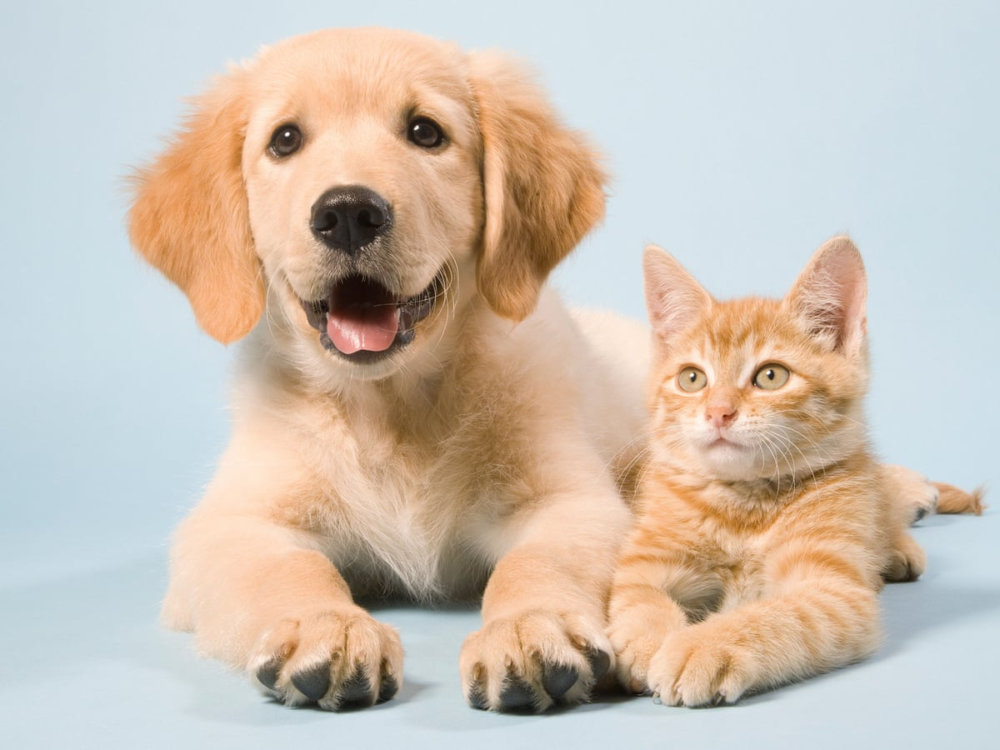
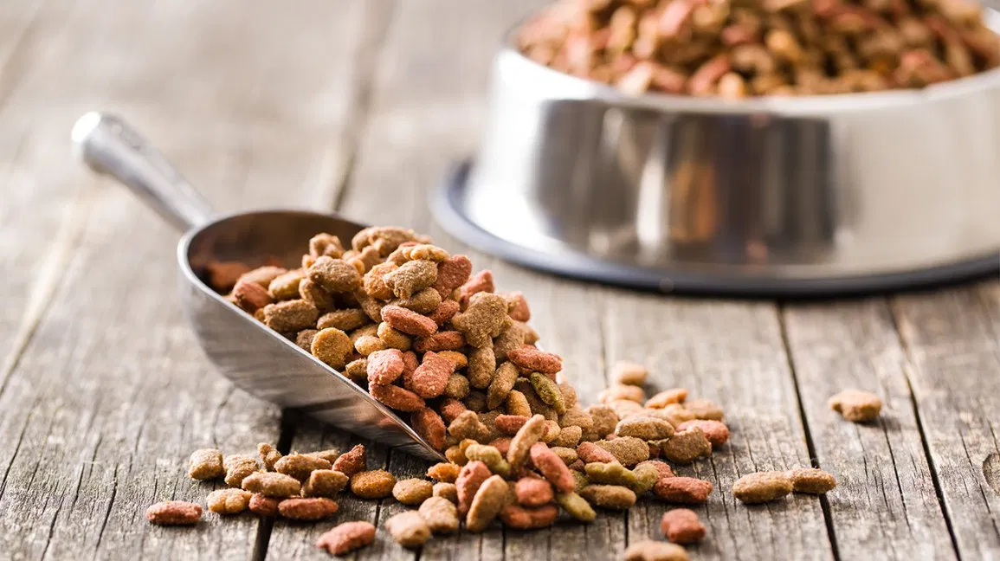
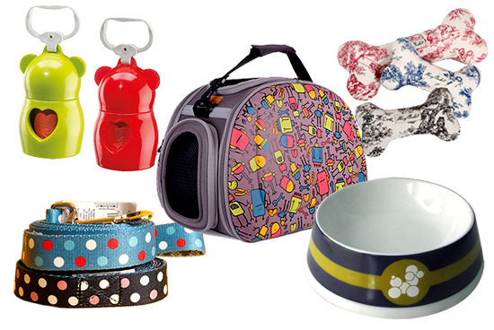
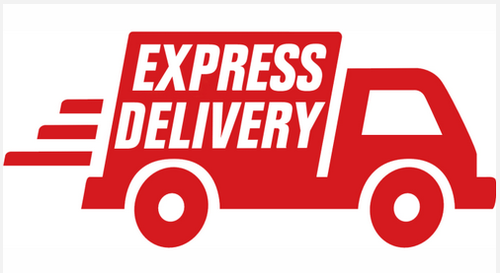

Who we are?
E-commerce is revolutionizing the way we all shop in India. Why do you want to hop from one store to
another in
search of cute pets when you can find it on the Internet in a single click? Not only pets. Paws4Life
houses everything you can possibly imagine, from trending breed of pets, their accessories, latest brands of
their nutritional products, Not only these, you can also adopt some stray pets or you can report about them for
others who can take care of them.
You name it, and you can stay assured about finding them all here. For
those of you with erratic
working hours, Paws4Life is your best bet. Shop in your PJs, at night or in the wee hours of the morning. This
e-commerce never shuts down.
What you can expect?
Buy/Selling of pets
You can buy a pet for yourself of your favourite kind of breed from 50+ vendors near you at best price.
Not
only this you can sell your pet either by contacting to these vendors or by directly to the needy!

Adoption of pets
If you want to adopt a pet, you can do that too! You can see all the possible adoption reports in a single click
and whichever suites you, can directly contact to that user.
If you want to create the report for the same,
that
could also be done easily!

Nutritional items for your pet
Food plays a vital role in our daily life; whether it's you or your pet. So Paws4Life come up with it's own
store
that can provide best deals on the food products of variety of brands available in the market so that you can
save a lot of money to buy more products from our websiteüôÉ.

Basic accessories for your pet(Toys/Couch/Health/Sanitary care)
Our store also comes up with the basic neccessities for your pet. So you don't have to go to another websites to
look up for these things!

Express Delivery
We can assure that you can have your purchased products on perfect and in the fastest time as it comes with
90-minutes express delivery feature. So after ordering, sit back and relax and play with your beloved pet!üê©üê∂
